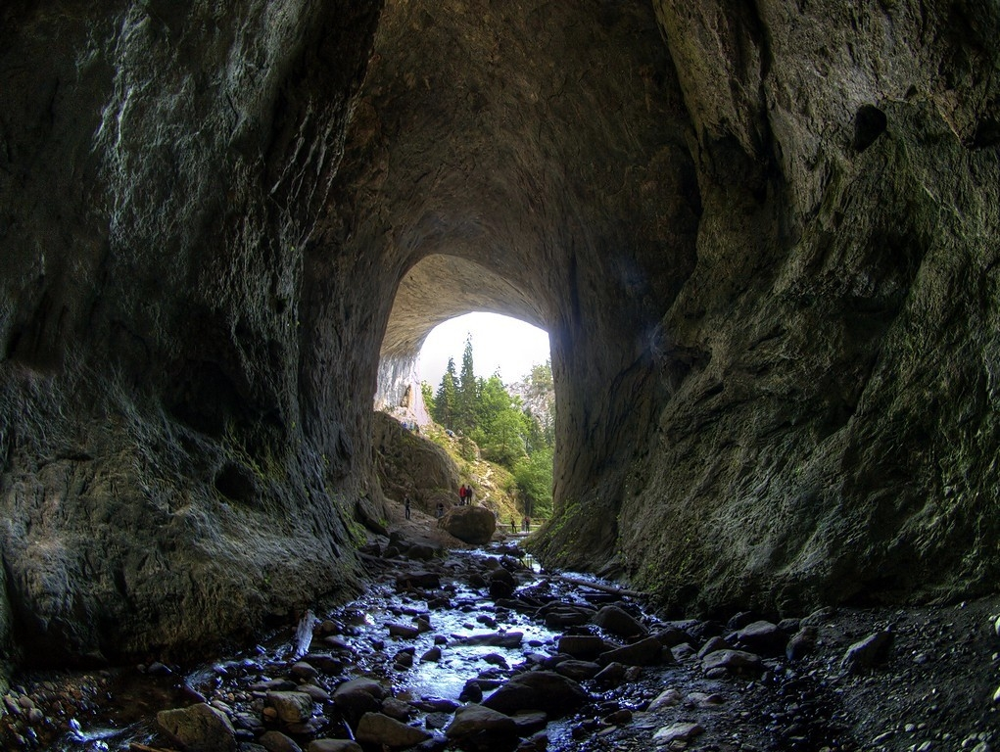

Чудните мостове са един от най-интересните природни феномени в Родопите. Намират се на 5 км. северозападно от село Забърдо. Някогашната пещера, образувана в мраморния щок от водите на р. Дълбок дол, се е срутила навярно при земетресение. Водите са отнесли падналите материали, като в резултат на това са се образували един до друг два, редки по своята красота, мраморни скални моста. Дебелината на свода е около 20 метра, а пропастта под него е дълбока 45 метра. Моста е широк 45 метра.

Вторият мост, който е на 200 метра от първия, е по-скоро тунел, дълъг 60 метра. Той започва със сравнително широк отвор, който постепенно се стеснява, за да се превърне накрая в цепнатина. Близо пред втория мост е входът на Ледената пещера, в която до късно лято се задържа лед.